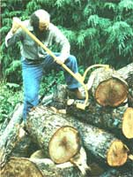
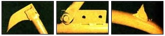
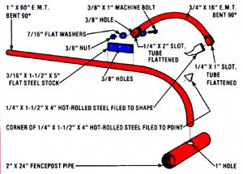

Use free-for-the-hauling, scrap parts to construct a lumber lifter without parallel:
If you're a member of the growing ranks of the wood-heating clan, you've no doubt found out that cutting wood for your stove or fireplace is only half the fuel foraging battle. Once you've felled and sectioned your trees, each log must still be trimmed, split, gathered, and stacked.
And-in the course of such firewood processing adventures-you may also have discovered that moving a 12-foot-long log with a kink in the middle is no easy matter ... timber of that proportion can often be neither rolled nor lifted. Of course, professional lumber choppers have just the tool for such a job -called a log peavey ... after its inventor, Joseph Peavey-but a commercial model of this back-saving device would probably be too expensive to be worthwhile for the occasional "lumberjack." However, MOTHER's version of Mr. Peavey's log lifter is so easy to make that it would be worth your while to build one ... especially since most of the components can be found in construction site scrap piles (be sure to ask before you scavenge from one of these gold mines) or even at the town dump!
Start by locating a handle: a 60" length of 1" electrical conduit (professionally called E.M.T. or electrical metallic tubing) bent to a 90* angle at one end (as shown in the drawing). Much of the conduit used in construction will already have 90* curves (for turning building corners), so you can easily adapt such scrap-pile treasures to your needs.
Next obtain a 24" piece of 2" fencepost pipe, and bore a 1" hole-through one side of the tube-directly in its center. Then push the bent end of your 1" conduit through the 1" hole and weld the two pieces of pipe together.
With that done, find a 4" length of 1/4" X 1-1/2" hot-rolled steel and cut one corner off at a 45* angle. Take this little wedge and weld it-point out-to the outside of the curve of the conduit handle ... about six inches from the junction of fencepost and pipe.
Now scrounge up a 16" section of 3/4" conduit again with a 90* bend-and cut a 1/4" slot in each end of the 3/4 " pipe . . . but make that notch one inch deep on one end and two inches deep on the other.
Then place the remainder of the 1/4" X 1-1/2" X 4' piece of hot-rolled steel into the one-inch-deep slot (keeping the cornerless part out and the steel stock's length perpendicular to the conduit), flatten the sides of the tubing against the plate (use a hammer), and weld the modified rectangle firmly in place. Once that's done, grind or file the recently attached hot-rolled steel "teeth" - including both the piece on the arm and the pyramid on the handle-to approximately the shapes shown in the drawing.
To complete your log peavey, weld a 3/16" X 1-1/2" X 5" steel plate to the back of the handle ... just beyond the curve (as shown). Drill three evenly spaced 3/8' holes in the plate and another 3/8' opening through the two-inch-deep cut in the 3/4" arm. Hammer the arm's tip flat against the steel plate, and then fasten the arm and handle sections of conduit together with a 3/8" X 1" bolt, two 7/16" washers, and a 3/81 nut, as illustrated. (You need three holes in the plate on the handle so the jaws can be adjusted to grab logs up to 16" in diameter.)
Your finished peavey will make the task of moving and lifting heavy logs a whole lot easier. But that's not all: It can also serve-if you just continue rolling the log until the lifter's handle rests on the ground-as a stand for sawing or trimming ... sort of a "lumberjack".
|
 STAFF PHOTOS ABOVE: Just push with your weight to roll the log into position for bucking |
 LEFT: The jaw's upper tooth is filed into a hook shape. CENTER: The jaw's ""bite"" is fully adjustable. RIGHT: The jaw's lower tooth |
 |